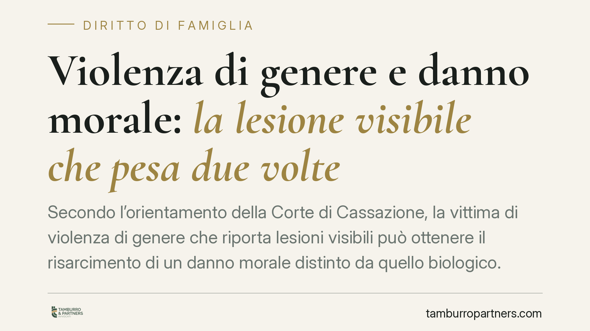

Violenza di genere e danno morale: la lesione visibile che pesa due volte
Secondo l'orientamento della Corte di Cassazione, la vittima di violenza di genere che riporta lesioni visibili può ottenere il risarcimento di un danno morale distinto da quello biologico. La vergogna e la mortificazione sociale sono una sofferenza ulteriore, che va allegata e può essere provata anche per presunzioni. Un chiarimento che incide sulla quantificazione del risarcimento.

Il principio
Quando una vittima di violenza di genere riporta segni evidenti dell'aggressione — un occhio tumefatto, ematomi al volto, lesioni che non si possono nascondere — alla componente strettamente fisica del danno si aggiunge una sofferenza di altra natura: la vergogna, l'imbarazzo nei contesti sociali e lavorativi, la mortificazione legata all'esposizione pubblica dell'offesa subita.
La Corte di Cassazione ha ribadito che questa sofferenza integra un danno morale autonomo, cioè una voce di pregiudizio distinta e non necessariamente assorbita nel danno biologico, specie quando quest'ultimo è di lieve entità.
> Nota di cautela: il riferimento numerico alla singola pronuncia va verificato nella massima ufficiale prima di ogni utilizzo. Il principio qui illustrato è comunque coerente con l'orientamento consolidato di legittimità in materia di danno non patrimoniale.
Inquadramento normativo
La cornice è l'art. 2059 del codice civile, che consente il risarcimento del danno non patrimoniale nei casi previsti dalla legge. Le Sezioni Unite della Cassazione, con le celebri sentenze nn. 26972-26975 del 2008, hanno chiarito che il danno non patrimoniale è categoria unitaria ma a struttura composita: al suo interno convivono profili diversi — il danno biologico (la lesione dell'integrità psico-fisica, medicalmente accertabile) e il cosiddetto danno morale (la sofferenza interiore, il patema d'animo).
Il principio di fondo è duplice. Da un lato, va evitata la duplicazione risarcitoria: non si possono liquidare due volte gli stessi profili di pregiudizio sotto nomi diversi. Dall'altro, il giudice deve dare rilievo a tutte le componenti effettivamente provate: se accanto alla lesione fisica esiste una sofferenza morale ulteriore e distinta, questa non può essere ignorata né considerata automaticamente ricompresa nel danno biologico.
Perché il danno morale non è assorbito nel biologico
Il danno biologico misura la compromissione della salute. Il danno morale misura un'altra cosa: il turbamento interiore, la sofferenza patita, la lesione della dignità personale. Nella violenza di genere con lesioni visibili questa sofferenza assume una dimensione particolare, perché l'offesa diventa pubblica e la vittima è esposta allo sguardo altrui.
Proprio per questo il danno morale può essere apprezzato in modo autonomo. Non occorre una prova diretta e documentale della sofferenza, che per sua natura è interiore: può essere desunto per presunzioni, dalla natura e dalle modalità dell'offesa, dal contesto in cui è maturata e dalla visibilità delle lesioni. Non si tratta di un'inversione dell'onere della prova, ma del normale ricorso al ragionamento presuntivo, che consente al giudice di risalire dal fatto noto al fatto da provare.
Implicazioni pratiche
Per chi agisce in giudizio, la conseguenza è concreta: la domanda risarcitoria non dovrebbe limitarsi al danno biologico accertato dal medico legale. È opportuno formulare una domanda che individui e tenga distinto anche il profilo morale, allegando in modo puntuale le circostanze da cui quella sofferenza emerge.
La visibilità delle lesioni, in questa prospettiva, non è un dettaglio: è un elemento che rafforza l'allegazione del danno morale e orienta la quantificazione. Omettere questa voce significa rischiare un risarcimento inferiore a quello spettante.
Cosa fare in concreto
- Documenta le lesioni fin da subito: referti del pronto soccorso, certificati medici, fotografie datate dei segni visibili.
- Formula una domanda risarcitoria distinta per il danno biologico e per il danno morale, senza lasciare quest'ultimo implicito.
- Allega in modo analitico le circostanze della sofferenza: contesto dell'aggressione, esposizione sociale e lavorativa, ripercussioni sulla vita di relazione.
- Coordina il profilo penale e quello civile: gli atti del procedimento penale costituiscono spesso la base probatoria del giudizio risarcitorio.
- Valuta un supporto specialistico: è utile un tempestivo supporto legale e l'accesso ai centri antiviolenza, che offrono assistenza anche sul piano della protezione e dell'orientamento.
In sintesi
Nella violenza di genere le lesioni visibili possono pesare due volte: come danno alla salute e come danno alla dignità. Riconoscere e documentare entrambi i profili è la condizione per un risarcimento pieno. La prova del danno morale non richiede una dimostrazione diretta della sofferenza, ma può fondarsi sul ragionamento presuntivo, a partire dalla gravità e dalla visibilità dell'offesa.
---
*Contributo informativo a cura di Tamburro & Partners Avvocati. Non costituisce parere legale.*
Ogni famiglia ha il suo equilibrio.
Separazione, divorzio, affidamento, assegno: se vuoi un confronto riservato su una specifica situazione, scrivi allo studio. Ti rispondiamo entro un giorno lavorativo.